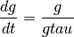

Represents a first-order, ordinary differential equation with respect to time.
Time Derivative Constructor
| Parameters: |
|
|---|
For example, if our time derivative was:

Then this would be constructed as:
TimeDerivative( dependent_variable='g', rhs='g/gtau' )
Note that although initially the time variable (independent_variable) is t, this can be changed using the methods: td.lhs_name_transform_inplace({'t':'T'} ) for example.
Methods
| __init__(dependent_variable, rhs) | Time Derivative Constructor |
| accept_visitor(visitor, **kwargs) | link to something about visitation. |
| lhs_name_transform_inplace(name_map) | Replace atoms on the LHS with mapping in name_map |
| name_transform_inplace(name_map) | |
| rhs_as_python_func([namespace]) | Returns a python callable which evaluates the expression in |
| rhs_has_missing_functions() | returns True if at least 1 function on the RHS is not in the math |
| rhs_name_transform_inplace(name_map) | Replace atoms on the RHS with values in the name_map |
Attributes
| atoms | Returns a list of the atoms in the LHS and RHS of this expression |
| dependent_variable | Return the dependent variable |
| independent_variable | Return the independent variable |
| lhs | Return a string of the lhs of the form: ‘dS/dt’ |
| lhs_atoms | |
| rhs | |
| rhs_atoms | Returns an iterator over all the variable names and mathematical |
| rhs_funcs | |
| rhs_missing_functions | yield names of functions in the RHS which are not in the math |
| rhs_names |
link to something about visitation.
Replace atoms on the LHS with mapping in name_map
Returns a python callable which evaluates the expression in namespace and returns the result
returns True if at least 1 function on the RHS is not in the math namespace
Replace atoms on the RHS with values in the name_map
Returns a list of the atoms in the LHS and RHS of this expression
Return the dependent variable
Return the independent variable
Return a string of the lhs of the form: ‘dS/dt’
Returns an iterator over all the variable names and mathematical functions on the RHS function. This does not include defined mathematical symbols such as pi and e, but does include functions such as sin and log
yield names of functions in the RHS which are not in the math namespace